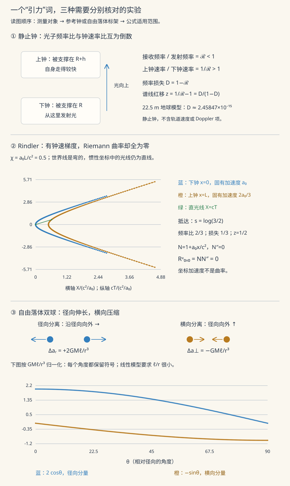

本页目录
广相 I · 等效原理与测地线
对标：Carroll §1–3 / Schutz ｜ 前置：sr-01、grad-math 流形几何 I–IV（本课的数学已全部建成——收割季） 广义相对论的出发点是一个电梯思想实验：引力可以被局部变换掉。由此推出"引力不是力，是时空几何"——自由落体走弯曲时空的测地线。你的流形几何四页在本页整体变现：度规、联络、测地线方程逐一对号入座。
学习层：电梯里消掉的是“重力”，还是曲率？
1. 具体情境：两个自由落体球的间距
在足够小的自由落体实验室里，可以选局部惯性坐标，使某一点的 Christoffel 符号消失；一个小球在那里近似匀速直线运动。但若同时释放相隔 \(\ell\) 的两个小球，它们的相对加速度会留下潮汐量级
坐标加速度可以在一点消去，Riemann 曲率控制的相对加速度不能。等效原理的“局部”二字，正由这本双球账本变得可测。
2. 先预测：弱场公式能走多远？
- 把实验室整体改成自由落体，单球的局部重力读数可归零；两球间的潮汐读数是否也必为零？
- 地面高差 \(h\ll R_\oplus\) 时，\(\Delta\nu/\nu\simeq gh/c^2\) 与势差公式 \(\Delta\Phi/c^2\) 应否一致？
- 对中子星附近，直接把 \(GM/(Rc^2)\) 当作精确红移是否可靠？
3. 三本账：局部自由落体、红移与潮汐
无 JavaScript 时的静态读法：
| 情境 | 单球局部读数 | 双球相对读数 | 红移模型 |
|---|---|---|---|
| 小型自由落体实验室 | 可在中心事件消去 | 仍有 \(R^\mu{}_{\nu\rho\sigma}\) 控制的潮汐 | 局部线性势差 |
| 地球塔楼/GPS | 弱场近似足够 | \(2GM\ell/r^3\) 很小但非零 | \(\Delta\nu/\nu\simeq\Delta\Phi/c^2\) |
| 非旋转球对称致密星外部 | 不能把大区域摊平 | 潮汐显著 | Schwarzschild 静止钟比 \(\nu_\infty/\nu_r=\sqrt{1-2GM/(rc^2)}\) |
实验揭示后可选择地球塔楼、GPS、白矮星和中子星外部，改变高差与双球间距；账本并列弱场势差、Schwarzschild 外部静止钟结果及潮汐量级。中子星预设只是球对称非旋转外部模型，不包含自转、磁场、物态方程或辐射转移。
4. 证据边界
- 弱等效原理是自由落体普适性；把它简写成两个“质量相等”只是牛顿语言下的表达。
- 法坐标只能让一点处的联络系数消失；在有曲率的邻域内不能把度规整体变成 Minkowski。
- \(gh/c^2\) 与 \(\Delta\Phi/c^2\) 是弱场小高差近似。强场静止钟要用具体度规；运动源、旋转时空和光传播路径还需更多信息。
- 测地线偏离实验测的是相对加速度。有限数值表不是 Einstein 场方程的求解器。

1. 等效原理
弱等效原理：在给定引力场中，忽略自引力与非引力作用的测试体具有相同自由落体轨迹；在牛顿语言里表现为惯性质量与被动引力质量之比普适（Eötvös 类实验把可能的组分依赖压到极小【引用】）。Einstein 等效原理：自由落体电梯内，局部非引力物理与狭义相对论的惯性系不可区分；反之，加速实验室在足够小的区域内模拟均匀引力效应。
两个立即的预言【推导级直觉】：
- 引力红移：电梯顶向底发光——加速期间底部迎向光 ⇒ 蓝移；等效到引力场：光离开引力井损失频率 \(\frac{\Delta\nu}{\nu} = \frac{gh}{c^2}\)（Pound–Rebka 实验 22.5 m 楼测出 \(10^{-15}\) 级 ✓）；等价说法：深处的钟慢——GPS 卫星快 45 μs/天（sr-01 的欠条另一半）；
- 光线弯曲：电梯里直线的光，在地面系看是抛物线——引力弯光（定量还差一半：完整弯曲要 \(g_{\mu\nu}\) 的空间部分，gr-02 给全）。
关键转折："局部可消除、全局不可"——消不掉的残余是潮汐力（相邻自由落体的相对加速），而"相邻测地线的相对加速 = 曲率"（流形 IV 的 Jacobi 场语言）——引力的本体 = 时空曲率：等效原理把引力从"力"重新归档为"几何"。
2. 数学的接管（流形几何逐页对号）
| 物理概念 | 数学对象 | 出处 |
|---|---|---|
| 时空 | 4 维洛伦兹流形 \((M, g_{\mu\nu})\)，号差 \((-,+,+,+)\) | 流形 I/III |
| 引力势的推广 | 度规 \(g_{\mu\nu}\)（10 个分量） | 流形 III |
| "引力场强" | Christoffel 联络 \(\Gamma^\lambda_{\mu\nu}\)（度规的一阶导） | 流形 III |
| 潮汐力/真引力 | Riemann 曲率 \(R^\rho_{\ \sigma\mu\nu}\)（二阶导） | 流形 IV |
| 局部惯性系 | 法坐标（一点处 \(g = \eta,\ \Gamma = 0\)——等效原理的数学定理） | 流形 III |
固有时：\(d\tau^2 = -g_{\mu\nu}dx^\mu dx^\nu/c^2\)（sr-01 间隔的弯曲版）。
3. 测地线方程
物理公设：自由测试粒子走测地线。对类时曲线，邻近测地线使固有时驻定并在无共轭点的足够短区间内局部最大；光走零测地线，不能用“最大固有时”描述：
【推导】 变分 \(\delta\int d\tau = 0\) 的 Euler–Lagrange 方程（流形 III 已推）；或"局部惯性系里 \(\frac{d^2\xi}{d\tau^2} = 0\) 换回一般坐标"（链式法则两行）——两条路同终点。\(\blacksquare\)
牛顿极限【推导（关键的对账）】 慢速（\(\frac{dx^i}{d\tau} \ll \frac{dt}{d\tau}\)）+ 弱场静态（\(g_{00} = -(1 + \frac{2\Phi}{c^2})\)）：测地线方程只剩
——牛顿引力回收 ✓，且读出字典：\(g_{00}\) 携带牛顿势——"钟慢 \(\propto\) 引力势"（§1 红移的度规语言）。引力 = 时间流逝率的空间梯度：苹果下落是在"往钟慢的地方跑"——广相最反直觉又最深的一句话（低速运动主要感受 \(g_{00}\)——时间部分，而非空间弯曲）。
4. 练习与要点
例 1（GPS 全账本） 卫星（20200 km，\(v \approx 3.9\) km/s）：狭相慢 \(\frac{v^2}{2c^2} \approx -7\ \mu\)s/天；引力势高处快 \(\frac{\Delta\Phi}{c^2} \approx +45\ \mu\)s/天——净 +38 μs/天 ⇒ 不修正每天定位漂移 ~11 km：广相是导航工程的日常参数（sr-01 例的完整版）。
例 2（法坐标的物理） 在自由落体空间站里做局部实验测不出地球引力（\(\Gamma = 0\) 可实现）；但相距 10 m 的两个测试球缓慢靠近/分离（潮汐）——"消得掉 \(\Gamma\)、消不掉 \(R\)" 的可观测版本。
例 3（红移手算） 白矮星表面（\(M \sim M_\odot, R \sim 6000\) km）：弱场尺度 \(\frac{GM}{Rc^2}\approx2\times10^{-4}\)，与谱线红移的量级相符。中子星若 \(GM/(Rc^2)\sim0.2\)，这个数只代表紧致度；Schwarzschild 外部从表面到无穷远的精确静止钟红移是 \(z=(1-2GM/(Rc^2))^{-1/2}-1\approx0.29\)，已不能把弱场尺度直接当作分数红移。\(\blacksquare\)
下一页：几何如何被物质弯曲——Einstein 场方程与它的第一个精确解：Schwarzschild 时空，水星进动与光线弯曲的定量收割。